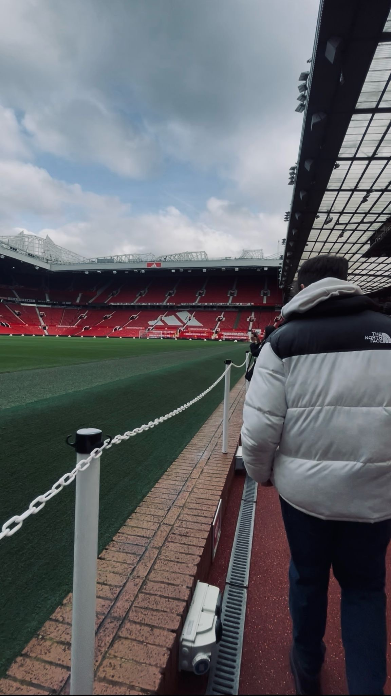

Hola, soy Adrián Aránegas Molina

Quién Soy
Soy un estudiante de 2º de Desarrollo de Aplicaciones Web (DAW) apasionado por el diseño de interfaces. Me centro en la creación de experiencias de usuario intuitivas y visualmente atractivas.
Mis Estudios
- Título: Desarrollo de Aplicaciones Web (2º DAW)
- Centro: I.E.S. Ntra. Sra. de los Remedios
- Especialidad: Diseño de Interfaces Web (UI/UX), HTML5, CSS3 y JavaScript.
Este blog es un recopilatorio de los ejercicios realizados en la asignatura de Diseño de Interfaces Web.